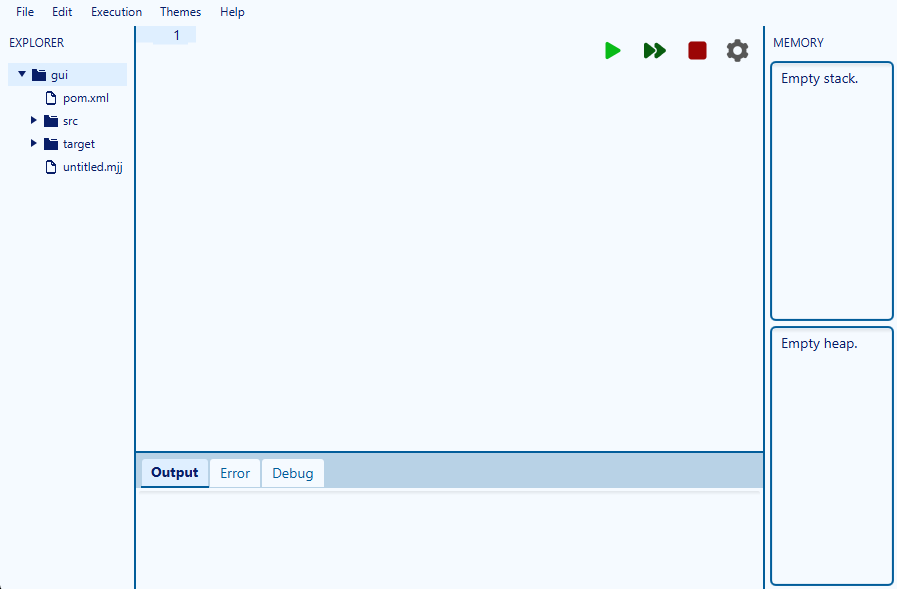
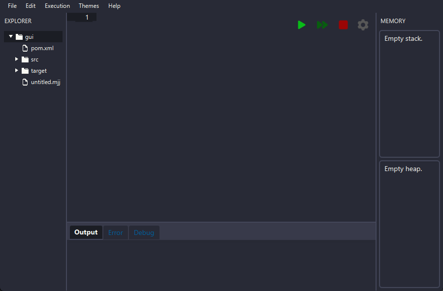
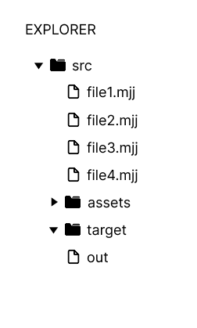
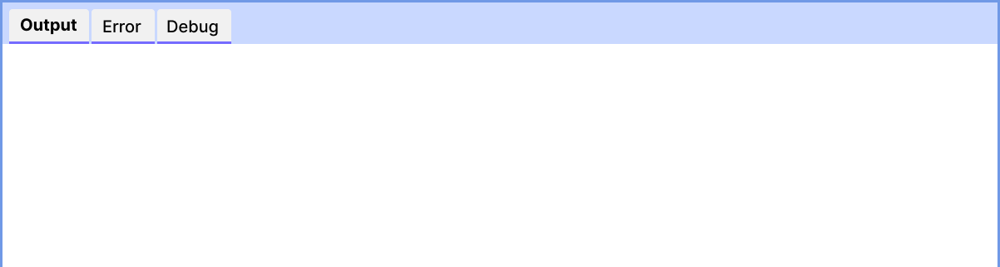
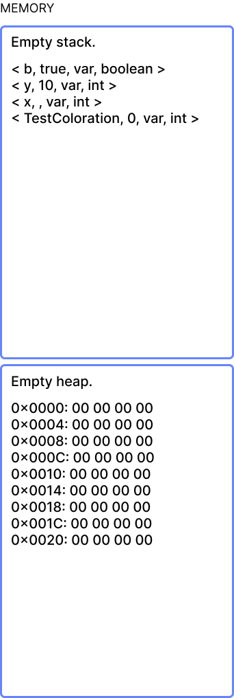

How to use MiniJaja IDE
This IDE was developped exclusively to support MiniJaja / JajaCode languages.
1. Top Menu

The top menu will help you to access different features, customizations and help pages (such as this one).
File
In this menu, you can:
- New : Create a new file
- Open File : Open an existing file
- Open Folder : Open an existing folder to quickly open all the file in it
- Close : Close the current file
- Save : the current file as
- Save As : Save the current file with a new name
- Quit : Quit the application
Edit
In this menu, you can:
- Undo : Undo the last action
- Redo : Redo the last undone action
- Cut : Cut the selected text
- Copy : Copy the selected text
- Paste : Paste the copied/cut text
- Delete : Delete the selected text
- Select All : Select all the text in the current file
- Unselect All : Unselect all the text in the current file
Execution
In this menu, you can:
- Start : Execute the current file
- Run : Run the current file
- Run Step-by-step : Run the current file step-by-step
- Stop : Stop the execution
- Clear Output : Clear the output
Themes
In this menu, you can choose between different themes for the IDE. It also affects the syntax highlighting in the
editor.

The default theme is the light theme.

Here is an example of a dark theme. (Dracula theme)
Help
In this menu, you can access different help pages:
- Interface : this page
- MiniJaja : documentation about the MiniJaja language
- JajaCode : documentation about the JajaCode language
- Memory : informations about the memory management
- Errors : informations about different error names and their meaning
2. File Tree

The file tree allows you to quickly open files in the opened folder.
You can also expand/collapse folders by clicking on the arrows next to them.
3. Editor

The editor is where you can write your MiniJaja code.
It supports syntax highlighting and basic code editing features.
You can also see line numbers on the left side of the editor and click on them to add/remove breakpoints;
Commands
The commands section allows you to control the execution of your code.
You have the following buttons:
- Run : Execute the code normally
- Run Step-by-step : Execute the code step-by-step
- Stop : Stop the execution
- Compile : Compile the code
4. Output

The output section displays the result of the execution of your code.
It also shows error messages and other relevant information.
You have 3 sections in the output:
- Output : displays the standard output of your program
- Errors : displays error messages if the program fails
- Debug : displays debug messages such as breakpoints
5. Memory

The memory section displays the current memory of your program (Heap and Stack, check the memory help for more
informations).